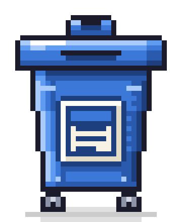
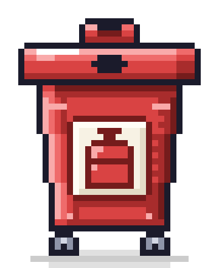
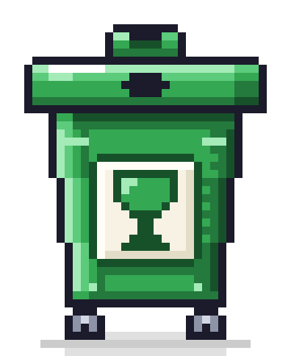
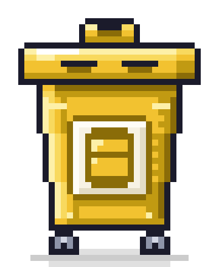

de toneladas
de resíduos sólidos urbanos foram geradas no Brasil em 2024, segundo o Panorama da ABREMA.
Entenda os desafios ambientais, descubra o que acontece com os resíduos depois do descarte e veja como pequenas escolhas podem fazer diferença.
Explorar conteúdosOs dados ajudam a entender por que separar os resíduos e fortalecer a coleta seletiva são atitudes tão importantes.
de resíduos sólidos urbanos foram geradas no Brasil em 2024, segundo o Panorama da ABREMA.
Índice estimado para a reciclagem mecânica de materiais secos no Brasil em 2024.
Trabalhadores da coleta e triagem contribuem diretamente para que materiais retornem à cadeia produtiva.
Fonte: Panorama dos Resíduos Sólidos no Brasil 2025, da ABREMA, com dados referentes a 2024. O percentual de 8,73% refere-se à reciclagem de resíduos secos, não a todos os tipos de recuperação de resíduos.
Reciclar é transformar resíduos em matéria-prima ou em novos produtos, reduzindo a necessidade de extrair recursos naturais e evitando que materiais aproveitáveis sejam descartados.
Os resíduos são separados conforme o material: papel, plástico, vidro, metal e orgânicos.
Os materiais são recolhidos pela coleta seletiva ou entregues em pontos de recebimento.
Os materiais são classificados e preparados. O que está contaminado pode comprometer o reaproveitamento.
Os materiais seguem para processamento e podem se tornar matéria-prima de novos produtos.
O código de cores da Resolução CONAMA nº 275/2001 facilita a identificação dos resíduos. Veja os quatro grupos mais comuns no dia a dia.

Jornais, folhas, caixas de papelão e embalagens de papel limpas e secas.
Evite: papel higiênico, guardanapos sujos e papel engordurado.
Garrafas PET, potes, frascos e embalagens plásticas aceitas pela coleta local.
Dica: esvazie as embalagens e retire o excesso de resíduos.
Garrafas, potes e frascos de vidro, quando aceitos pelo serviço de coleta.
Atenção: embale vidros quebrados com segurança e identifique o pacote.
Latas de alumínio, aço, tampas e outros itens metálicos recicláveis.
Dica: esvazie as latas e, se possível, retire restos de alimentos.Importante: as regras podem variar conforme o município e a cooperativa. Consulte sempre as orientações da coleta seletiva da sua região. Pilhas, baterias, eletrônicos, lâmpadas, medicamentos e óleo usado precisam de destinação específica — não devem ser colocados junto aos recicláveis comuns.

Quando resíduos são jogados em ruas, terrenos, rios ou descartados sem tratamento adequado, podem causar impactos que afetam os ecossistemas e a qualidade de vida das pessoas.
É um modelo que busca manter produtos e materiais em uso pelo maior tempo possível. Em vez de seguir apenas o caminho “extrair, produzir e descartar”, incentiva reduzir o consumo, reutilizar, consertar, compartilhar e reciclar.
Exemplo: uma garrafa retornável pode ser reutilizada várias vezes; quando um produto não puder mais ser usado, seus materiais podem ter uma destinação adequada.
É um processo de decomposição controlada de materiais orgânicos, como cascas de frutas, legumes e folhas secas, que gera um composto rico em matéria orgânica.
Por que é útil? Ajuda a aproveitar restos orgânicos e pode reduzir a quantidade de resíduos enviada para a disposição final. A compostagem exige equilíbrio e cuidados para evitar mau cheiro e atração de animais.
Não é necessário mudar tudo de uma vez. Escolha hábitos possíveis e mantenha-os no dia a dia.
Use sacolas reutilizáveis e evite descartáveis quando possível.
Conserte, doe ou reutilize objetos antes de descartá-los.
Planeje compras e refeições para evitar desperdício de alimentos.
Procure cooperativas e pontos de entrega para resíduos especiais.
Compartilhe informações confiáveis e incentive a coleta seletiva.
Economize água e energia sempre que possível.
Os conteúdos desta página foram elaborados com base em materiais institucionais e relatórios. Consulte os documentos originais para conhecer os dados e suas metodologias.
Página educativa. As orientações de descarte devem ser confirmadas com o serviço de limpeza urbana ou com a cooperativa responsável pela sua região.
Aprenda, coloque em prática e compartilhe sua EcoAção.